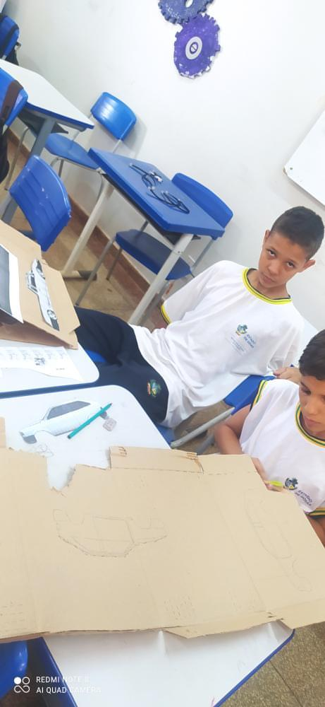
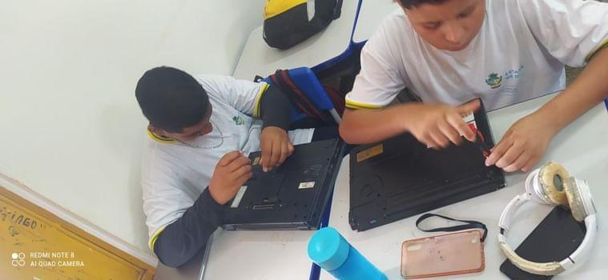
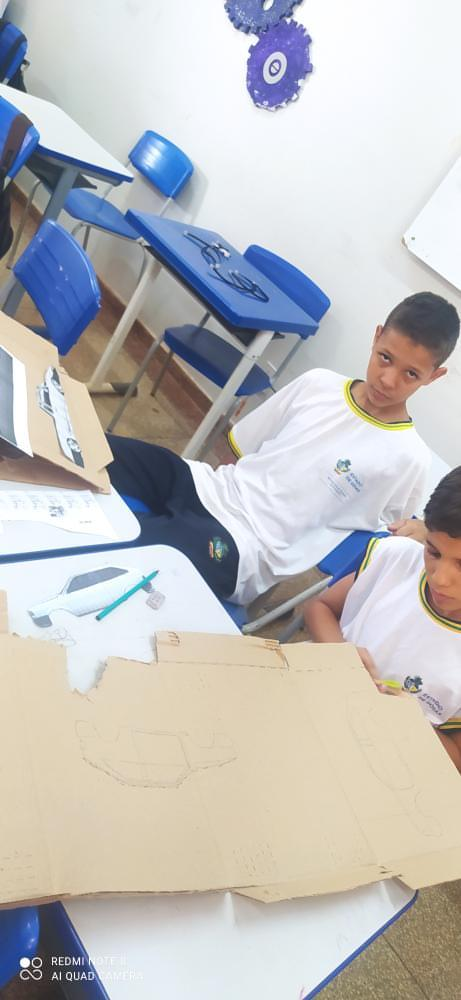
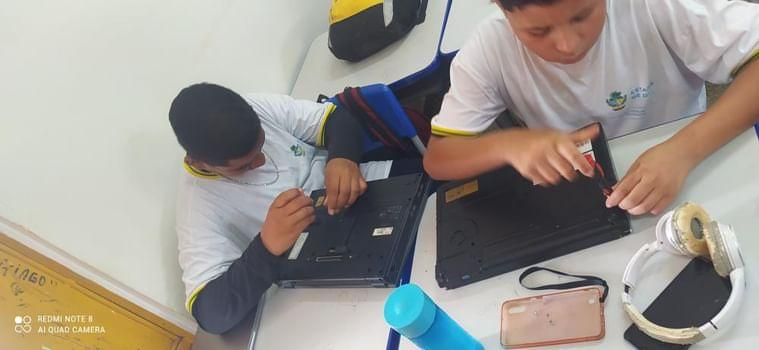
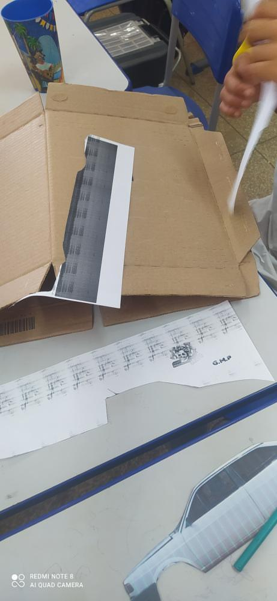
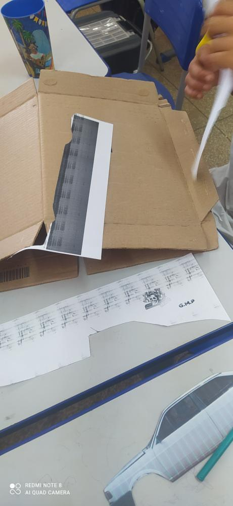

A robótica e a cultura Maker têm uma relação intrínseca, pois ambas promovem a criação, inovação e o aprendizado prático. Juntas, elas impulsionam a criatividade e a exploração em áreas como ciência, tecnologia, engenharia e matemática (STEM), e contribuem para o desenvolvimento de habilidades valiosas. A robótica envolve a construção e programação de robôs, proporcionando uma experiência de aprendizado prática e tangível. Além disso, a robótica combina conhecimentos de diversas áreas, como eletrônica, mecânica, programação e automação, demonstrando como diferentes disciplinas podem ser integradas para criar soluções funcionais. Já a cultura Maker promove a mentalidade de "faça você mesmo", encorajando as pessoas a criar, modificar e reparar objetos e dispositivos por conta própria. Os Makers são conhecidos por sua criatividade e habilidade de inovar, muitas vezes utilizando materiais e recursos disponíveis para criar soluções únicas. A integração da robótica na cultura Maker é frequentemente facilitada por meio de workshops e atividades educacionais que incentivam a exploração e a criação. A junção da robótica com a cultura Maker cria um ambiente fértil para a inovação, aprendizado prático e criatividade, promovendo uma abordagem mais hands-on para a educação e o desenvolvimento de habilidades valiosas para o mundo atual.


 



 
